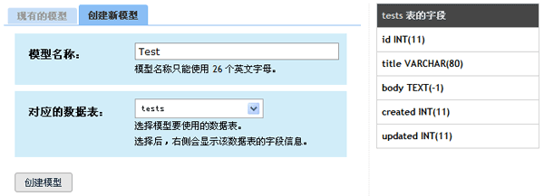
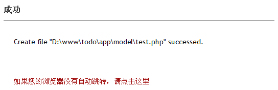

创建模型
WebSetup 除了可以创建控制器，还可以从数据表直接创建匹配的模型。下面我们做个简单的测试。
创建数据表
在 phpMyAdmin 中选中先前创建的 todo_db 数据，然后执行下列 SQL 命令：
1 2 3 4 5 6 7
| CREATE TABLE `todo_db`.`tests` ( `id` INT NOT NULL AUTO_INCREMENT PRIMARY KEY , `title` VARCHAR( 80 ) NOT NULL , `body` TEXT NOT NULL , `created` INT NOT NULL , `updated` INT NOT NULL )
|
执行成功后，数据库将多出一个 tests 表。
从数据表创建模型
从 WebSetup 中选择“代码生成器 → 列出模型 –> 创建新模型”。如果此时出现错误信息“失败 – 无法读取数据库或没有数据表”，表示 configs/database.yaml 没有正确配置，导致 WebSetup 无法连接数据库。
连接数据库成功后，从下拉列表框中选择 tests 数据表，此时右侧会显示 tests 数据表的字段信息。确认无误后，输入模型名称“Test”，并点击“创建模型”按钮：


创建成功，创建好的模型文件保存为 app/model/test.php，内容如下：
1 2 3 4 5 6 7 8 9 10 11 12 13 14 15 16 17 18 19 20 21 22 23 24 25 26 27 28 29 30 31
| * Test 封装来自 tests 数据表的记录及领域逻辑 */ class Test extends QDB_ActiveRecord_Abstract { * 返回对象的定义 * * @static * * @return array */ static function __define() { return array ( 'behaviors' => '', 'behaviors_settings' => array ( ), 'table_name' => 'tests', .... ....
|
源文件内容较多，就不全部列出来了。但仔细观察这个源文件，可以发现 WebSetup 已经根据数据表帮我们设置好了基本的验证规则、自动填充等内容：
1 2 3 4 5 6 7 8 9 10 11 12 13 14 15 16 17 18 19 20 21 22 23 24
| * 指定在数据库中创建对象时，哪些属性的值由下面指定的内容进行覆盖 */ 'create_autofill' => array ( 'created' => self::AUTOFILL_TIMESTAMP , 'updated' => self::AUTOFILL_TIMESTAMP , ), * 在保存对象时，会按照下面指定的验证规则进行验证。验证失败会抛出异常。 */ 'validations' => array ( 'title' => array ( array('not_empty', 'title不能为空'), array('max_length', 80, 'title不能超过 80 个字符'), ), 'body' => array ( array('not_empty', 'body不能为空'), ), ),
|
此外，这个文件中已经定义好了三个重要的静态方法（static function）。其中，define() 返回的内容指出了保存模型使用的数据表、属性设置以及模型的其他方面。以后我们对模型的许多修改都集中在 define() 方法中。
充分利用 WebSetup 可以帮助我们节约大量时间，显著减少重复劳动。
这个模型是用于测试的，不需要时删除掉即可。对应的 tests 数据表也可以删除。